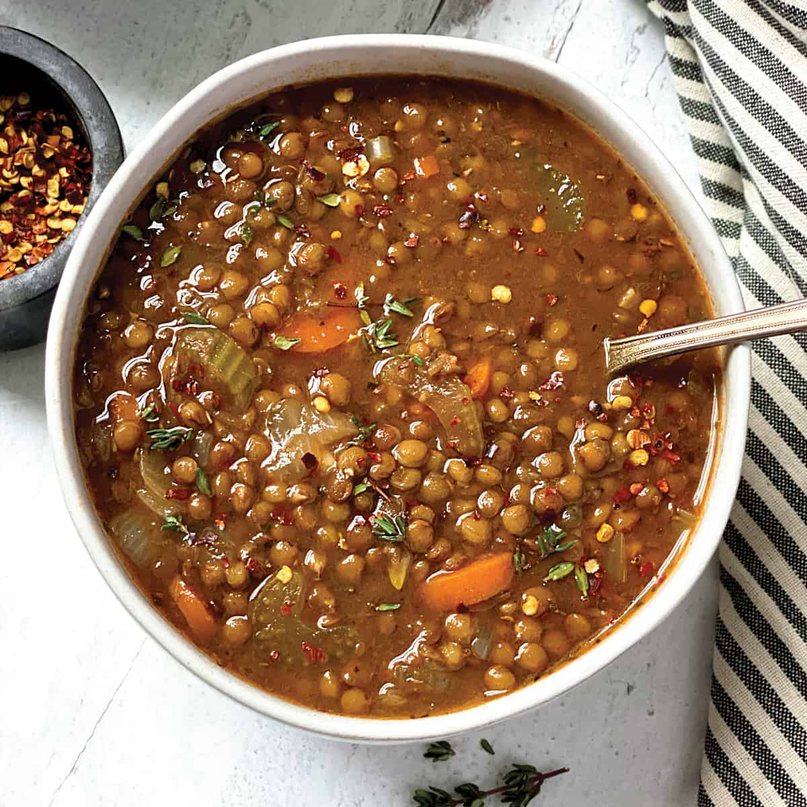

Soup

Description
This lentil soup is a cozy, warming bowl of nutrients. Sure to brighten up any winter!
Ingredients
- Vegetable Broth
- Oil
- Lentils
- Onions
- Garlic
- Celery
- Carrots
- Potatoes
- Salt
- Pepper
- Paprika
- Italian Seasoning
Instructions
- Mince Garlic and Onion
- Chop carrots, celery, and potatoes
- Heat a pot with oil at the bottom and sautee garlic and onions
- Add other vegetables
- Add vegtable broth, seasoning, and lentils
- Simmer for 30-45 minutes until lentils are cooked
- Serve Hot!